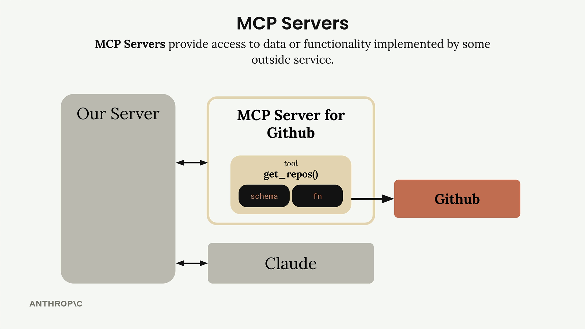

Depverse Documentation
An MCP server that gives Claude structured, real-time access to the npm Registry — so it stops guessing package versions, dependencies, or license info, and starts fetching them.
stdio. Point Claude Code (or any MCP client) at mcp_server.py and you're done.
Why Depverse?
AI coding assistants are notoriously bad at one thing: knowing the current state of the npm ecosystem. Their training data is frozen at some cutoff — so when they suggest a version, a peer range, or a changelog, they're often months or years out of date.
writes
"react@17.0.0"
get_latest_version("react") →writes
"react@19.2.5"
What it's good for
- AI coding agents writing
package.json, imports, or install commands. - Project scaffolding and dependency pinning.
- Upgrade planning — "what changed between react 17 and 19?"
- Pre-install audits — license, unpacked size, maintainers.
- Peer-compat validation without a real install.
What it's not
- A replacement for the
npmCLI. - A registry mirror — it always fetches live from
registry.npmjs.org. - A vulnerability scanner or security tool.
Architecture
Depverse is a Python MCP server built on FastMCP. The MCP client (Claude Code, Claude Desktop,
or the included CLI chat) spawns it as a subprocess and communicates over stdio using JSON-RPC.
Depverse in turn talks to the public npm Registry over HTTPS via httpx.
Project layout
# repo root Depverse/ ├── mcp_server.py # The MCP server — all 36 tools ├── mcp_client.py # Thin MCP client wrapper (stdio) ├── main.py # Entrypoint for the CLI chat ├── test_npm_tool.py # Manual end-to-end test ├── core/ │ ├── chat.py # Tool-using chat loop │ ├── cli_chat.py # CLI chat with @docs + /commands │ ├── cli.py # prompt-toolkit UI │ ├── claude.py # Anthropic API wrapper │ └── tools.py # MCP ↔ Anthropic tool bridge ├── pyproject.toml ├── .mcp.json # Example MCP config for clients └── docs/ # This documentation site
Installation
Depverse runs locally as a Python process. You'll need:
- Python 3.10+
- uv (recommended) or plain
pip
uv (once)# macOS / Linux curl -LsSf https://astral.sh/uv/install.sh | sh # or via pip pip install uv
git clone https://github.com/yash-neural/Depverse.git cd Depverse
uv venv source .venv/bin/activate # Windows: .venv\Scripts\activate uv pip install -e .
uv run test_npm_tool.py
Configuration — optional, CLI chat only
The MCP server itself needs no configuration — it has no secrets, no tokens, no state. Just register it with Claude Code (below) and you're done.
A .env file is only required if you want to use the bundled CLI chat
(main.py), which calls the Anthropic API directly. In that case, create .env
in the project root:
# .env — only needed for main.py (CLI chat) ANTHROPIC_API_KEY="sk-ant-..." CLAUDE_MODEL="claude-sonnet-4-5" USE_UV="1" # spawns the server with `uv run`
.env. A .gitignore entry is included by default.
Register with an MCP Client
Depverse is a standard MCP server. Any MCP-aware client can launch it over stdio and use its 36 tools. Pick your client below for a copy-paste config.
uv) and the absolute path
to your cloned Depverse folder. Replace /absolute/path/to/Depverse below with your real path.
Claude Code
The CLI handles registration for you — no JSON editing required.
Project scope (recommended)
Writes .mcp.json into the current directory. Server active only when Claude Code is opened here.
cd /absolute/path/to/Depverse claude mcp add Depverse --scope project \ -- uv --directory "$(pwd)" run mcp_server.py
User scope (everywhere)
claude mcp add Depverse --scope user \ -- uv --directory "/absolute/path/to/Depverse" run mcp_server.py
Verify
# restart Claude Code, then: /mcp # should list: Depverse → 36 tools
Other Claude Code commands
Claude Desktop
Edit Claude Desktop's config file directly — the app reads it on startup.
Config file location
- macOS:
~/Library/Application Support/Claude/claude_desktop_config.json - Windows:
%APPDATA%\Claude\claude_desktop_config.json - Linux:
~/.config/Claude/claude_desktop_config.json
Add Depverse to mcpServers
{
"mcpServers": {
"Depverse": {
"command": "uv",
"args": [
"--directory",
"/absolute/path/to/Depverse",
"run",
"mcp_server.py"
]
}
}
}
Restart Claude Desktop. The tools appear in the 🔌 menu next to the chat input.
Cursor
Cursor has native MCP support. Add the config via Settings → Cursor Settings → MCP → Add new MCP server, or edit the JSON directly.
Config file location
- Project-specific:
.cursor/mcp.jsonin the project root - Global:
~/.cursor/mcp.json
Config
{
"mcpServers": {
"Depverse": {
"command": "uv",
"args": [
"--directory",
"/absolute/path/to/Depverse",
"run",
"mcp_server.py"
]
}
}
}
Reload Cursor. Depverse's tools appear in the Agent panel's tool list — toggle them on/off as needed.
Cline (VS Code extension)
In VS Code, open the Cline side panel → click the MCP Servers icon (the server icon at the top) → Configure MCP Servers.
That opens cline_mcp_settings.json. Add:
{
"mcpServers": {
"Depverse": {
"command": "uv",
"args": [
"--directory",
"/absolute/path/to/Depverse",
"run",
"mcp_server.py"
]
}
}
}
Cline picks up changes automatically — no restart needed.
Windsurf
In Windsurf, open Settings → Cascade → Model Context Protocol, or edit the config file directly.
Config file
~/.codeium/windsurf/mcp_config.json
{
"mcpServers": {
"Depverse": {
"command": "uv",
"args": [
"--directory",
"/absolute/path/to/Depverse",
"run",
"mcp_server.py"
]
}
}
}
Restart Cascade (or Windsurf) to load the server.
GitHub Copilot (VS Code)
VS Code's Copilot Chat supports MCP servers via workspace or user settings. Add the
config under the "mcp" key.
Workspace config
Create .vscode/mcp.json in your project:
{
"servers": {
"Depverse": {
"type": "stdio",
"command": "uv",
"args": [
"--directory",
"/absolute/path/to/Depverse",
"run",
"mcp_server.py"
]
}
}
}
Reload VS Code. In the Copilot Chat side panel, open the tools menu — Depverse tools appear under
Depverse. Toggle them on before asking questions.
Generic / Other MCP Clients
Any client that speaks MCP over stdio can use Depverse. The launch command is always the same:
# command uv # args --directory /absolute/path/to/Depverse run mcp_server.py
Or, without uv:
# command python # args /absolute/path/to/Depverse/mcp_server.py
Make sure the Python environment used has Depverse installed (pip install -e . in the repo root).
The server speaks JSON-RPC 2.0 over stdio — no network ports, no daemon.
Run the CLI chat
If you don't use Claude Code, the repo includes its own CLI chat (main.py) that spawns the server
over stdio and talks to Claude via the Anthropic API:
uv run main.py
# you'll see a "> " prompt — try:
> what's the latest version of react?
> show me the peer deps of react-dom
> is express@5.0.0 published yet?
The CLI supports tab completion for /-commands, history via ↑/↓, and auto-suggestions as you type.
Tools
Depverse exposes 36 tools in seven groups. All return JSON; errors surface as typed MCP tool errors.
Version tools (6)
These answer "which version?" questions.
latest, beta, next…) mapped to versions.CHANGELOG.md from the linked repo.package@version exist on npm?Package Info tools (7)
These answer "what kind of package?" questions.
package.json.owner/repo slug.Dependency tools (5)
These answer "what does it need?" questions.
yes / no / unknown / missing.
Built-in semver matcher handles ^, ~, comparators, and || ranges.
Security & Health tools (5)
These answer "is this package safe and alive?" questions.
active / slowing / stale / abandoned.exress → high (1 edit from express);
lodaash → medium; unrelated names → none.
Compatibility & Update tools (5)
These answer "will this upgrade break anything?" questions.
engines field.^18.0.0 or ~4.17.20 to the highest published version that satisfies it.{package_name: installed_version} and get each one's latest + a gap level
(major / minor / patch). Parallel fan-out — fast even for whole lock files.
Search & Discovery tools (4)
These answer "what packages exist for X?" — no exact name required.
@babel, @vue, @types. Strict prefix filter for correctness.Utility tools (4)
Ergonomic helpers that don't fit the other groups.
/latest for many packages in parallel — one round-trip per package instead of sequential.package.json resolves to a published version. Catches typos like lodash@999.0.0.--dev / --exact dialects.Full tool reference
Every tool, its parameters, which registry endpoint it hits, and what it returns.
| Tool | Parameters | Endpoint | Returns |
|---|---|---|---|
| Version Tools | |||
get_latest_version | package_name | GET /{pkg}/latest | { name, version } |
get_all_versions | package_name | GET /{pkg} | { name, count, versions[] } |
get_version_info | package_name, version | GET /{pkg}/{version} | Manifest (deps, license, repo…) |
get_dist_tags | package_name | GET /{pkg} | { name, dist_tags{} } |
get_changelog | package_name, version? | GitHub Releases / raw CHANGELOG.md | { source, repo, body | content } |
check_version_exists | package_name, version | GET /{pkg}/{version} | { package, version, exists } |
| Package Info Tools | |||
get_package_info | package_name | GET /{pkg} + /{pkg}/latest | name, desc, author, license, maintainers, dates |
get_package_readme | package_name | GET /{pkg} | { content, truncated, has_readme } |
get_package_keywords | package_name | GET /{pkg}/latest | { count, keywords[] } |
get_package_repository | package_name | GET /{pkg}/latest | { repository, github_slug } |
get_package_homepage | package_name | GET /{pkg}/latest | { homepage, npm_url } |
get_package_license | package_name | GET /{pkg}/latest | { license, licenses } |
get_package_size | package_name, version? | GET /{pkg}/{version|latest} | { unpacked_bytes, file_count } |
| Dependency Tools | |||
get_dependencies | package_name, version? | GET /{pkg}/{version|latest} | { count, dependencies{} } |
get_peer_dependencies | package_name, version? | GET /{pkg}/{version|latest} | { peer_dependencies, peer_meta } |
get_dev_dependencies | package_name, version? | GET /{pkg}/{version|latest} | { count, dev_dependencies{} } |
get_dependency_tree | package_name, version?, max_depth? | Recursive fetch (asyncio.gather) | Nested tree with dedup caching |
check_peer_compatibility | package_name, version?, installed{} | Manifest + built-in semver matcher | { all_ok, report[] } |
| Security & Health Tools | |||
check_vulnerabilities | package_name, version? | POST api.osv.dev/v1/query | { vulnerable, count, advisories[] } |
get_deprecation_status | package_name, version? | GET /{pkg} or /{pkg}/{version} | { deprecated, message, deprecated_count } |
check_maintainer_activity | package_name | GET /{pkg} (reads time) | { status, days_since_last_publish, abandoned } |
get_download_stats | package_name | api.npmjs.org/downloads/point/* | { last_day, last_week, last_month, popularity } |
check_typosquat_risk | package_name | Local Levenshtein vs. top-50 list | { risk, closest_popular, edit_distance } |
| Compatibility & Update Tools | |||
check_node_compatibility | package_name, version? | GET /{pkg}/{version|latest} | { engines, node, npm, yarn } |
compare_versions | package_name, from_version, to_version | Parallel manifest fetch | { dependencies, dev_dependencies, peer_dependencies, engines } |
get_breaking_changes | package_name, from_version, to_version | Parallel manifest fetch | { breaking_major_bumps[], likely_breaking } |
resolve_semver | package_name, version_range | GET /{pkg} + local matcher | { resolved, matched_count, candidates[] } |
check_outdated | packages{ name: version } | Parallel /{pkg}/latest fetches | { outdated[], up_to_date[], errors[] } |
| Search & Discovery Tools | |||
search_packages | query, limit? | GET /-/v1/search | { count, results[] } (scored hits) |
get_similar_packages | package_name, limit? | Manifest keywords → GET /-/v1/search | { keywords_used, results[] } |
get_packages_by_author | username, limit? | GET /-/v1/search?text=author:{u} | { author, count, packages[] } |
get_organization_packages | scope, limit? | GET /-/v1/search?text=@scope | { scope, count, packages[] } |
| Utility Tools | |||
batch_get_versions | package_names[] | Parallel /{pkg}/latest | { versions{}, errors{} } |
validate_package_json | package_json, dependencies{} | Per-dep GET /{pkg} + matcher | { valid, summary, results[] } |
generate_install_command | packages[], dev?, exact? | Local (no HTTP) | { commands: { npm, pnpm, yarn, bun } } |
resolve_cdn_url | package_name, version?, file? | GET /{pkg}/latest (only if no version) | { jsdelivr, unpkg, esm_sh } |
_fetch_json helper with a 10 s
timeout. Registry 404s and network errors surface to Claude as clear ValueErrors that the model
can reason about and retry.
Example queries
Ask Claude any of these in natural language — it picks the right tool automatically:
get_latest_version(package_name="express").get_all_versions and reports the count.get_dist_tags(package_name="react") — shows latest, beta, next, canary.get_changelog(package_name="react", version="18.2.0") — returns GitHub release body.get_package_size — returns bytes, human-readable size, and file count.get_package_license(package_name="express").get_package_readme and streams back the markdown.get_package_repository — returns URL and GitHub slug.get_peer_dependencies — shows the required react range.check_peer_compatibility — returns a per-peer yes/no.get_dependency_tree with max_depth=2.What is MCP?
The Model Context Protocol (MCP) is a communication layer that provides Claude with context and tools — without you writing tedious integration code.

An MCP Client (your server) connects to MCP Servers that contain tools, prompts, and resources. Each MCP Server acts as an interface to some outside service — GitHub, Slack, a database, or in our case, the npm Registry.
How MCP Works
MCP shifts the burden of tool definitions and execution onto MCP Servers.

Instead of authoring all those GitHub tools yourself, an MCP Server for GitHub handles it — wrapping functionality and exposing it as a standardized set of tools. Any MCP-aware client (Claude Code, Claude Desktop, Cursor) can immediately use it.
MCP Servers Explained
MCP Servers provide access to data or functionality implemented by some outside service.

The MCP Server for GitHub contains tools like get_repos() and connects directly to GitHub's API.
Your client talks to the MCP server, which handles all the GitHub-specific details.
MCP Message Types
Once connected, the client and server exchange specific message types defined in the MCP specification.

ListToolsRequest / ListToolsResult — the client asks the server "what tools do you provide?" and gets back a list of available tools.

CallToolRequest / CallToolResult — the client asks the server to run a specific tool with given arguments, then receives the results.
Transports
These messages are transport-agnostic — they travel over any channel that reliably carries JSON-RPC. In practice:
- stdio — local servers (what Depverse uses).
- HTTP / SSE / WebSockets — remote servers.
You're free to pick whichever transport fits your setup. The message contract stays the same.
End-to-End Flow
A user asks "What repositories do I have?" — here's how the query flows through every piece of the system.
- User Query — the user submits their question to your server.
- Tool Discovery — your server needs to know what tools are available to send to Claude.
- List Tools Exchange — your server asks the MCP client for available tools.
- MCP Communication — the MCP client sends a
ListToolsRequestand receives aListToolsResult. - Claude Request — your server sends the query + tools to Claude.
- Tool Use Decision — Claude decides it needs to call a tool.
- Tool Execution — your server asks the MCP client to run the tool.
- External API Call — the MCP server makes the actual GitHub API call.
- Results Flow Back — GitHub responds, data flows back as a
CallToolResult. - Tool Result to Claude — results sent back to Claude.
- Final Response — Claude formulates an answer.
- User Gets Answer — response delivered to the user.

Common Questions
Who authors MCP Servers?
Anyone can create an MCP server implementation. Often, service providers themselves will make their own official implementations — for example, AWS might release an official MCP server with tools for their various services.
How is this different from calling APIs directly?
MCP servers provide tool schemas and functions already defined for you. If you call an API directly, you'll be authoring those tool definitions on your own. MCP saves you that implementation work.
Isn't MCP just the same as tool use?
A common misconception. MCP servers and tool use are complementary but different concepts. MCP servers provide tool schemas and functions already defined for you; tool use is how Claude actually calls those tools. The key difference is who does the work — with MCP, someone else has already implemented the tools for you.
Building an MCP Server
Writing an MCP server becomes much simpler when you use the official Python SDK — define tools with decorators and let the SDK handle the JSON schema heavy lifting.

Two core tools:
- Read a document — fetch content by document ID.
- Update a document — overwrite content for a given ID.
All documents live in a plain Python dictionary — keys are document IDs, values are the content.
docs = {
"document.pdf": "...",
"spreadsheet.xlsx": "...",
"report.txt": "...",
"spec.md": "...",
}
Project Walkthrough
A CLI chat app where Claude talks to a local FastMCP document server via stdio.
File structure
cli_project/ ├── main.py # entry point: wires everything ├── mcp_server.py # FastMCP server (docs dict) ├── mcp_client.py # MCPClient wrapper (stdio) ├── .env # ANTHROPIC_API_KEY, CLAUDE_MODEL └── core/ ├── claude.py # Anthropic SDK wrapper ├── chat.py # base chat loop ├── cli_chat.py # @mentions + /commands ├── cli.py # prompt-toolkit UI └── tools.py # tool-call dispatch
How it runs
- main.py loads
.env, creates aClaudeservice, then spawnsmcp_server.pyas a subprocess over stdio. - MCPClient opens a session, calls
list_tools()/list_prompts()to discover what the server offers. - CliChat takes user input, resolves
@docsand/commands, sends messages to Claude. - Claude decides to call a tool →
MCPClient.call_tool()→ the server runs it on the in-memorydocsdict. - Tool result flows back to Claude → final answer → displayed in the CLI.
Key features
Type @deposition.md to inline that document's content into Claude's context.
Type /summarize report.pdf to invoke a prompt defined by the MCP server.
Claude autonomously calls read_doc / edit_doc tools exposed by the server.
Setting Up the MCP Server
The Python MCP SDK makes server creation straightforward — initialize with a single line.
Initialize the server
from mcp.server.fastmcp import FastMCP mcp = FastMCP("DocumentMCP", log_level="ERROR")
FastMCP is the high-level helper from the MCP SDK that registers tools, resources, and
prompts behind a clean decorator API.
Storage — plain Python dict
docs = {
"deposition.md": "... Angela Smith, P.E.",
"report.pdf": "... 20m condenser tower.",
"financials.docx": "... budget and expenditures",
"outlook.pdf": "... projected performance",
"plan.md": "... implementation steps",
"spec.txt": "... technical requirements",
}
Field descriptions to auto-generate the schema
Claude consumes.
Reader Tool
The first tool reads document contents by ID. The decorator registers it; the function is the implementation.
@mcp.tool( name="read_doc_contents", description="Read the contents of a document and return it as a string." ) def read_document( doc_id: str = Field(description="Id of the document to read") ): if doc_id not in docs: raise ValueError(f"Doc with id {doc_id} not found") return docs[doc_id]
@mcp.tool(...) registers the function as a callable tool. name and description are what Claude sees when discovering tools.
Parameters use Python type hints. Field(description=...) from Pydantic gives Claude a clear explanation of each argument.
Raising ValueError is idiomatic — the SDK converts Python exceptions into a tool error Claude can reason about.
Editor Tool & SDK Benefits
The second tool performs simple find-and-replace operations on documents.
@mcp.tool( name="edit_document", description="Edit a document by replacing a string in the documents content with a new string." ) def edit_document( doc_id: str = Field(description="Id of the document that will be edited"), old_str: str = Field(description="The text to replace. Must match exactly, including whitespace."), new_str: str = Field(description="The new text to insert in place of the old text."), ): if doc_id not in docs: raise ValueError(f"Doc with id {doc_id} not found") docs[doc_id] = docs[doc_id].replace(old_str, new_str)
Key benefits of the SDK approach
- No manual JSON schema writing required.
- Type hints provide automatic validation.
- Clear parameter descriptions help Claude understand tool usage.
- Error handling integrates naturally with Python exceptions.
- Tool registration happens automatically through decorators.
Register Your Server with Claude Code
Claude Code can itself consume MCP servers. Register yours and your tools become available in every conversation — no API key, no custom CLI.
Project scope (recommended)
Writes a .mcp.json file in the project directory. Server is only active when Claude Code is opened inside this folder.
$ cd /path/to/your_project $ claude mcp add your-server --scope project \ -- uv --directory "/path/to/your_project" \ run mcp_server.py
User scope (everywhere)
Adds it to your Claude Code user config. Available in every project you open on this machine.
$ claude mcp add your-server --scope user \ -- uv --directory "/path/to/your_project" \ run mcp_server.py
Anatomy of the command
claude mcp add <name> # how Claude Code labels it --scope project|user # where to store the config -- # everything after is the launch cmd uv --directory ... run mcp_server.py # spawns server over stdio
Verify the registration
- Restart Claude Code — MCP servers are loaded at startup.
- Run
/mcpinside Claude Code → the server should appear with its tools listed. - Ask Claude to use it — e.g. "What's the latest version of react on npm?".
Other useful commands
Troubleshooting
"Server not showing up in /mcp"
- Run
claude mcp list— is Depverse listed? - Restart Claude Code fully (MCP servers are loaded at startup).
- Check the
--directorypath in yourmcp addcommand is absolute and points to the repo root.
"Tool calls fail with 'npm package not found'"
- Verify the exact spelling — npm names are case-sensitive.
- Scoped packages must include the scope:
@types/node, nottypes/node. - Private packages behind auth aren't supported — Depverse only reads the public registry.
"Changelog tool returns an error"
- Not every package links a GitHub repo in its manifest — in that case, no changelog source exists.
- GitHub API rate limits unauthenticated requests. Rare for a dev machine, but possible on shared IPs.